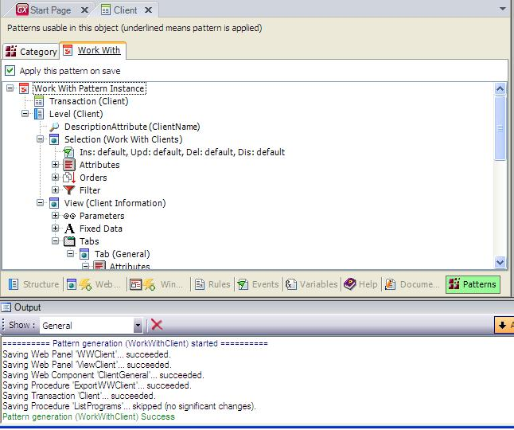
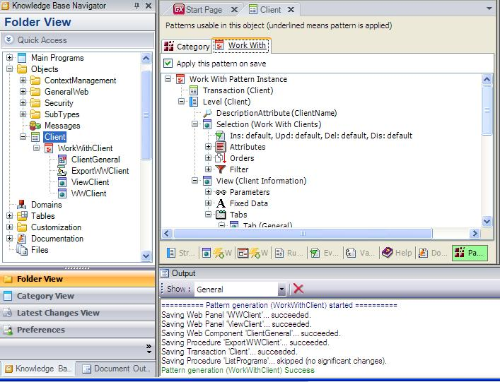
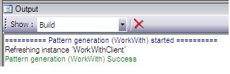
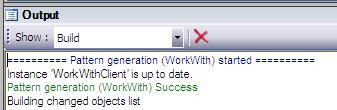

Applying Patterns
To apply Patterns in GeneXus, follow these steps:
 Messages are shown in the Output Window. If an error occurs, it is also shown in this window. It is also possible to select a Transaction or a group of Transactions to apply the pattern. You can make multiple selections of Transactions by pressing the Ctrl or Shift key and the mouse button. There are two ways to apply the pattern to a group of Transactions at the same time:
General configurations for all instances can be made in Pattern settings. Generated Objects and Pattern InstanceWhen you apply the pattern, you can see that all objects are generated associated with the Transaction. The root of this object is the associated instance for the Transaction (in the example, WorkWithClient), and you also have all the associated objects for the selected Transaction (Work With, View, Export to Excel procedure, etc.) as children of the Transaction's instance.  Refreshing InstancesWhen you make changes to your GeneXus objects in pattern instance or pattern settings and build the application, in the output window you can see the message below:  The decision to refresh instances is taken if any of the following situations occur:
The instance is Up to DateWhen you build the application and none of the instances or GeneXus objects have been modified, the following message is displayed in the output window:  Dynamic Pattern Update PropertyIf you don't want the instances to be refreshed or updated ever and ever this property will help you and speed up your work Dynamic Pattern Update Property. Note: As from GeneXus X Evolution 2 version, when applying pattern besides the date in which pattern was applied for the last time, the version of the pattern is stored. More information at SAC 30506. Videos |

| Backlinks | |
| Pattern settings | Category:Patterns |